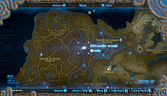
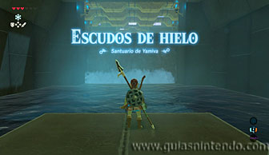
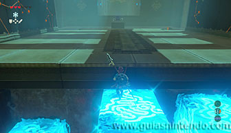
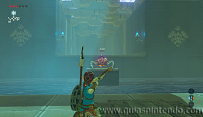
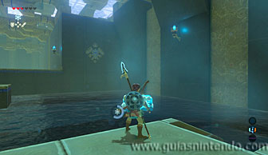
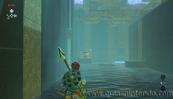
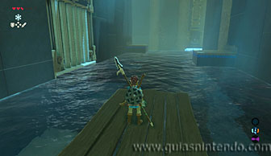
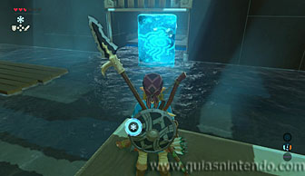
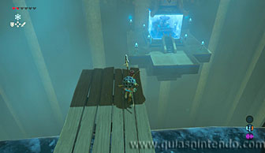
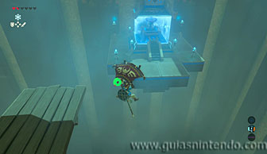

Puedes ir al santuario desde que llegas a la región de la torre de Lanayru. Lo encuentras situado al oeste del pantano, muy cerca de la Posta del pantano.

Para avanzar solo tienes que ir creando bloques de hielo con el módulo Témpano. Al principio en el suelo y después en la catarata para poder subir.

A continuación, puedes destruir a un miniguardián con flechas y entonces podrás sacar un cofre del fondo del agua usando un nuevo bloque de hielo (contiene un núcleo ancestral).

Continúa avanzando y llegarás a una corriente de agua por donde pasa una balsa. Antes de montar en ella acaba con los miniguardianes con flechas.

Según avances verás unas rejas a la izquierda. Si te paras en una de las plataformas donde estaban los guardianes, podrás poner otro bloque de hielo bajo la reja para abrirla. Allí detrás encuentras el segundo cofre (con una espada de caballero).

Después vuelve a subir en la balsa (cada vez que cae por el fondo vuelve a aparecer otra al principio del recorrido) y salta desde ella al altar para llegar planeando a él. Al examinarlo obtendrás un símbolo de valía.
